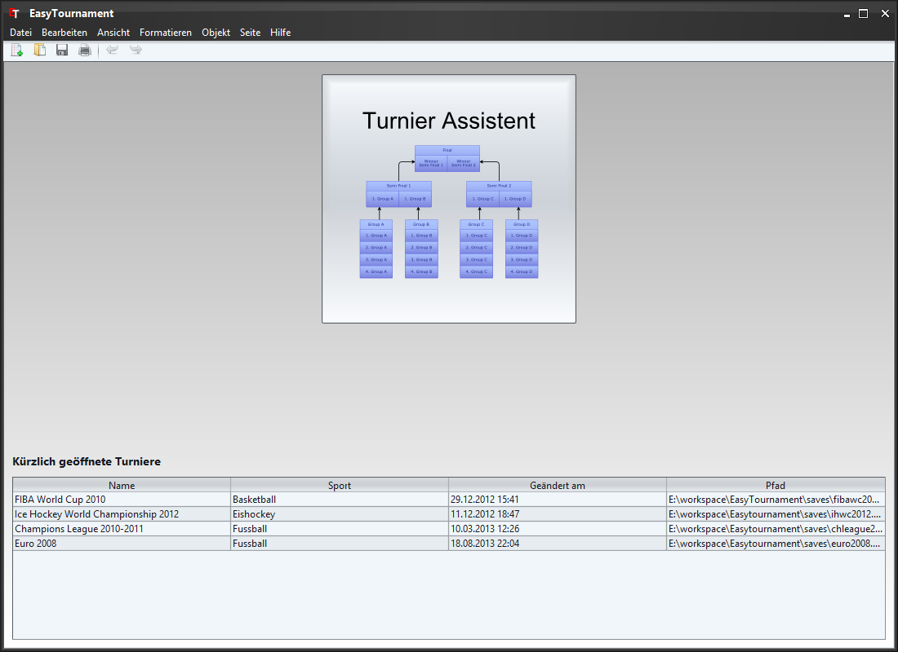

Um ein neues Turnier zu erstellen, wählen sie im Menü "Datei" den Eintrag "Neues Turnier" oder klicken auf das entsprechende Bild in der Symbolleiste (siehe Bild oben: grün markiert).
Um ein bestehendes Turnier zu öffnen, wählen sie im Menü "Datei" den Eintrag "Turnier öffnen" oder klicken auf das entsprechende Bild in der Symbolleiste (siehe Bild oben: rot markiert) und wählen die entsprechende Datei.
Falls sie ein Turnier kürzlich geöffnet hatten, erscheint es in der Tabelle unten im Fenster. Diese Turniere können ganz einfach mit einem Klick auf den entsprechenden Eintrag geöffnet werden.